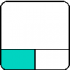

La navigation par la souris de FreeCAD est très flexible et intuitive, et grâce à ces conseils, vous pourrez l'utiliser après seulement quelques minutes de pratique. Le choix peut être sélectionné en cliquant le bouton droit de la souris, dans une partie vide de l'écran de travail, choisir "Styles de navigation" et cochez une des options disponibles.
Contents
La manipulation d'objet est commune à tous les ateliers. Les manipulations suivantes de la souris peuvent être utilisées pour contrôler la position de l'objet et de la vue selon laquelle le style de Navigation sélectionnée.
Il y a deux façons de changer le style de navigation :
- Dans les Préférences, section Affichage, onglet "Vue 3D";
- ou cliquez dans la vue 3D avec le bouton droit de la souris, et sélectionnez Style de navigation dans le menu contextuel.
A partir du bouton droit de la souris
C'est le style de navigation par défaut qui permet à l'utilisateur un contrôle simple de la vue, et ne nécessite pas l'utilisation des touches du clavier, sauf pour faire des sélections multiples.
| Selection | Pan (déplacement) | Zoom | Rotation | Rotation
Méthode alternative |
|---|---|---|---|---|

|

|

|

|

|
| Cliquez avec le bouton gauche de la souris sur l'objet que vous souhaitez sélectionner. Maintenez la touche CTRL enfoncée pour sélectionner plusieurs objets. | Cliquez sur le bouton central de la souris pour déplacer l'objet dans l'écran graphique | Utilisez la molette de la souris pour zoomer et dé-zoomer. Le réglage peut se faire dans "Édition → Préférences → Affichage → Vue 3D → Étape de zoom" | D'abord cliquez et maintenez le bouton central de la souris, puis cliquez sur le bouton gauche de la souris sur l'objet et faites-le glisser dans la direction souhaitée. Cela fonctionne comme une boule qui tourne autour de son axe. Si vous relâchez les touches avant l'arrêt de votre requête et si la fonction "Permettre l'animation" est cochée, l'objet poursuit sa rotation. Un double-clic avec le bouton central de la souris sur n'importe quelle partie d'un objet définit le nouveau centre de rotation et effectue un zoom en avant à partir de ce point. | D'abord cliquer et maintenez le bouton central de la souris, puis cliquez sur le bouton droit de la souris et faites glisser la souris dans la direction souhaitée. Cette méthode fonctionne comme décrite précédemment la rotation de l'affichage utilise le bouton central de la souris + le bouton gauche de la souris. Les utilisateurs qui utilisent la souris avec la main droite peuvent trouver cette méthode de rotation d'affichage plus facile que la méthode précédente. |

|

|

|
||
| Pour le mode déplacer, pressez la touche Ctrl pressez sur le bouton droit de la souris (rev 0.17) | Pour le mode Zoom, pressez les touches Ctrl et Shift pressez sur le bouton droit de la souris (rev 0.17) | Pour le mode Rotation, pressez la touche Shift pressez sur le bouton droit de la souris (rev 0.17) |
Dans le style de navigation OpenInventor Navigation (précédemment nommé Inventor), inspiré de Open Inventor (ne pas confondre avec Autodesk Inventor), il n'y a aucune sélection en utilisant uniquement la souris. Afin de sélectionner des objets, vous devez maintenir la touche CTRL enfoncée.
| Select | Pan | Zoom | Rotate View |
|---|---|---|---|
| ctrl +
|
|
or
|
|
| Maintenez enfoncée la touche ctrl et appuyez sur le bouton gauche de la souris au-dessus de l'objet que vous souhaitez sélectionner. | Cliquez sur le bouton gauche de la souris et déplacer l'objet. | Utilisez la molette de la souris pour zoomer et dézoomer, ou appuyez et maintenez le bouton central de la souris et cliquez sur le bouton gauche de la souris. | Cliquez le bouton gauche de la souris et faites glisser avec pour faire pivoter |
Le style de navigation Blender a été modélisée après Blender. Auparavant, il n'y avait pas de panoramique sur la souris et il fallait utiliser la touche Maj pour faire un panoramique de la vue. Cela a changé en 2016 avec une fonctionnalité supplémentaire. Pour faire un panoramique de la vue, vous pouvez maintenant appuyer sur les deux boutons gauche et droit de la souris et faire glisser dans la vue.
| Select | Pan | Zoom | Rotate View |
|---|---|---|---|
|
|
shift+ ou 
|
|
|
| Appuyez sur le bouton gauche de la souris au-dessus de l'objet que vous souhaitez sélectionner. | Maintenez la touche Maj enfoncée et cliquez sur le bouton central de la souris et déplacer l'objet, ou maintenez les boutons Gauche et Droit enfoncées et déplacer. | Utilisez la molette de la souris pour zoomer et dé-zoomer. | Cliquez le bouton central de la souris et faites glisser. |
En mode Touchpad, la vue panoramique, vue zoom et rotation de la vue ne peuvent être effectuées uniquement qu'avec la souris (ou uniquement avec le pavé tactile).
| Select | Pan | Zoom | Rotate View |
|---|---|---|---|
|  | shift+
|
PgUp / PgDn | alt+
|
| Appuyez sur le bouton gauche de la souris au-dessus de l'objet que vous souhaitez sélectionner. | Maintenez appuyée la touche Maj et déplacer l'objet. | Utilisez les touches PgUp et PgDn pour zoomer et dézoomer. | Maintenez la touche alt enfoncée et déplacez le curseur. |
| ou | ou | ||
| shift+ctrl+ | shift+ctrl+
| ||
| Maintenez les touches shift+ctrl enfoncées, et appuyez sur le bouton gauche de la souris puis déplacez le pointeur. | Maintenez les touches shift+ctrl enfoncées, puis déplacez le curseur. |
Ce style de navigation a été adapté pour la facilité d'utilisation avec écran tactile et un stylo, mais est très utilisable avec la souris aussi.
| Sélection | Panoramique | Zoom | Rotation | Inclinaison |
|---|---|---|---|---|
|
|

|
|
|
|
| Appuyer sur le bouton gauche de la souris sur un objet que vous voulez sélectionner. Presser Ctrl permet la sélection de plusieurs objets. | Appuyer sur le bouton droit de la souris et glisser pour déplacer la vue. | Tourner la molette de la souris pour zoomer + ou -. | Appuyer sur le bouton gauche de la souris et glisser pour pivoter la vue.
Dans le Sketcher et d'autres modes d'édition, ce comportement est désactivé. Presser sur Alt en même temps que sur un bouton de la souris pour activer le mode de rotation. La rotation s'effectue autour du point de focus de la caméra. Pour définir le point de focus de la caméra, cliquer le nouveau point avec le bouton central de la souris ; la vue sera centrée sur ce point. Vous pouvez aussi déplacer le pointeur de la souris au point voulu et appuyer sur la touche H du clavier. |
Appuyer à la fois sur les boutons gauche et droit de la souris, puis glisser vers la gauche ou la droite pour incliner la vue (ajuster l'horizon). |

|

ou
|

|

|

|
| Taper pour sélectionner. | Glisser avec deux doigts pour déplacer la vue, ou encore taper et maintenir, puis glisser (simule le panoramique avec le bouton droit de la souris). | Pincer pour zoomer (c.-à-d., glisser deux doigts l'un vers l'autre ou en les éloignant). | Glisser un doigt pour pivoter. Presser additionnellement sur Alt lorsque dans le mode d'édition d'esquisse du Sketcher et dans d'autres modes d'édition. | Tourner pour incliner la vue (c.-à-d., appuyer deux doigts sur la surface et faire pivoter la ligne imaginaire formée par les deux points de contact). |

Notes sur le style de navigation Gesture :
- sous Windows, les actions de gestes à deux doigts sont séparées. L'action dépend de comment le geste est amorcé. Par exemple, si le geste débute avec un panoramique à deux doigts, seulement le panoramique sera effectué. Changer la distance entre les doigts par la suite ne permettra pas le zoom.
Dans le style de navigation par geste Maya, tous les mouvements sont activés en appuyant la touche ALT et un bouton de la souris ; une souris à trois boutons est donc nécessaire pour utiliser correctement ce mode. Autrement, il est possible d'utiliser des gestes, puisque ce mode a été développé à partir du style de navigation Geste.
| Sélection | Panoramique | Zoom | Rotation |
|---|---|---|---|
|
|
Alt+
|
Alt+ ou
|
Alt+
|
| Appuyer sur le bouton gauche de la souris sur un objet que vous voulez sélectionner. | Presser Alt, appuyer sur le bouton du milieu de la souris et glisser pour faire un panoramique. | Presser Alt, appuyer sur le bouton droit de la souris et glisser pour zoomer + ou - in ou utiliser la molette de la souris. | Presser Alt, appuyer sur le bouton gauche de la souris et glisser pour faire pivoter l'objet. |
Sélectionner des objets
Simple selection
Les objets peuvent être sélectionnés en cliquant avec le bouton gauche de la souris sur l'objet soit dans la vue 3D, soit dans la vue arborescente.
Présélection
Un mécanisme de pré-sélection permet de mettre les objets en surbrillance et d'afficher des information à leur sujet lorsque le curseur de la souris les survole. Si vous n'aimez pas ce comportement, ou si vous avez un PC modeste, vous pouvez désactiver la pré-sélection dans les préférences. La couleur de l'objet présélectionné peut être choisie à partir du menu Edition → Préférences → Affichage → Couleurs → cocher "Activer la surbrillance de la présélection" et choisir une couleur.

A partir du menu Edition → Préférences →

Affichage → Couleurs


{kind=link}
{kind=link}
{kind=link}
Manier les objets
La manipulation des objets est commune à tous les établis. Les mouvements de souris suivants permettent de contrôler la position d'un objet et son affichage ou autres paramètres.
Manipuler les objets
FreeCAD offre des manipulateurs qui permettent de modifier un objet ou son apparence.
Un exemple simple est le plan de coupe qui peut être activé par le menu Vue → Clipping Plane.
Support matériel
FreeCAD supporte aussi le matériel 3D.
Mac OS X
Récemment nous avons créé un post sur le sur le forum des utilisateurs Mac pour qui ces combinaison de touches et boutons de souris ne fonctionnerait pas comme prévu. Malheureusement, aucun des développeurs n'est possesseur d'un Mac, pas plus que les autres contributeurs réguliers. Nous avons besoin de votre aide pour déterminer le fonctionnement des boutons de la souris et des combinaisons de touches afin que nous puissions les renseigner sur ce wiki.